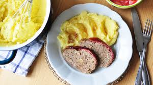

Voňavá domácí sekaná s přídavkem zeleniny a sýra, servírovaná s jemnou bramborovou kaší. Skvělé rodinné jídlo!
Mrkev nastrouháme najemno, cibuli a česnek nakrájíme nadrobno a krátce orestujeme. Necháme vychladnout.
Ovesné vločky promícháme se smetanou a necháme nabobtnat.
Do mísy vložíme maso, nastrouhanou mrkev, papriku, restovanou cibuli a česnek, vejce, vločky, nasekané bylinky, nastrouhaný sýr a sůl. Důkladně promícháme.
Ze směsi vytvoříme 3 šišky, které vložíme do pekáče, podlijeme vodou a pečeme v troubě při 200 °C asi 30 minut. Během pečení podléváme.
Brambory oloupeme, nakrájíme, dáme do hrnce se studenou vodou, osolíme a vaříme do změknutí (cca 20 minut).
Uvařené brambory scedíme, přidáme máslo a horké mléko. Rozmačkáme nebo vyšleháme do hladké kaše. Dochutíme solí.
Sekanou podáváme s bramborovou kaší a podle chuti i s okurkovým salátem.